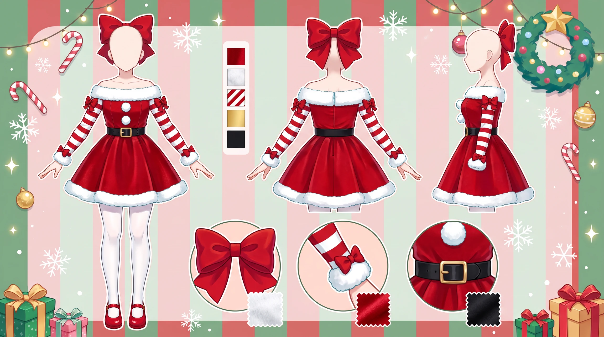
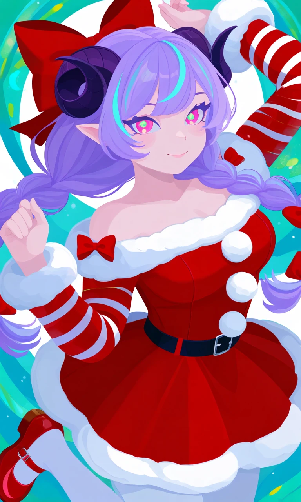
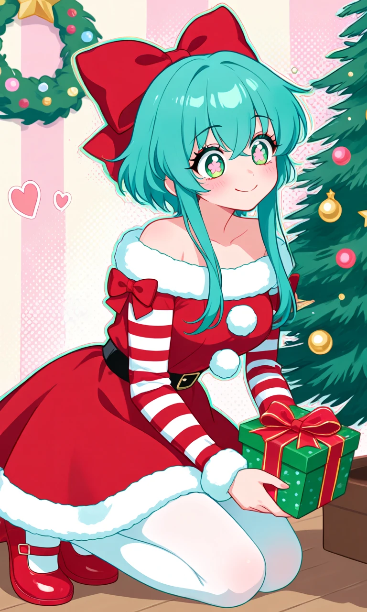

Peppermint Wishes

Outfit Prompt
A short red dress with an off-the-shoulder neckline edged in thick white fur, matching white fur around the flared skirt hem, and three large white pom-poms down the front. A black belt cinches the waist. Long red-and-white striped sleeves have small red bows at the shoulders and fluffy white cuffs. White tights, glossy red Mary Jane shoes, and an oversized red hair bow complete the festive outfit.
Outfit Examples



